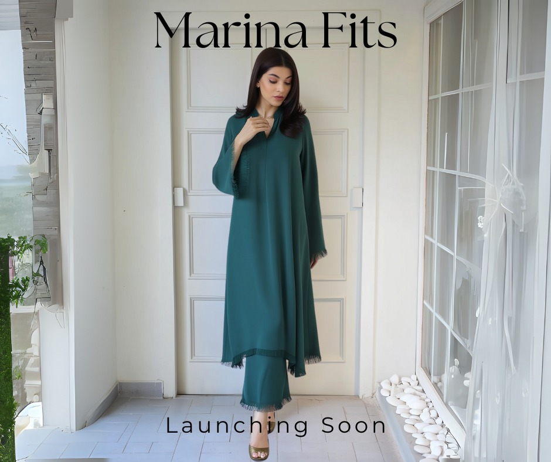
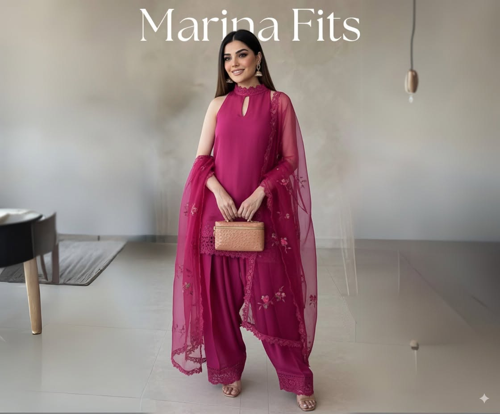
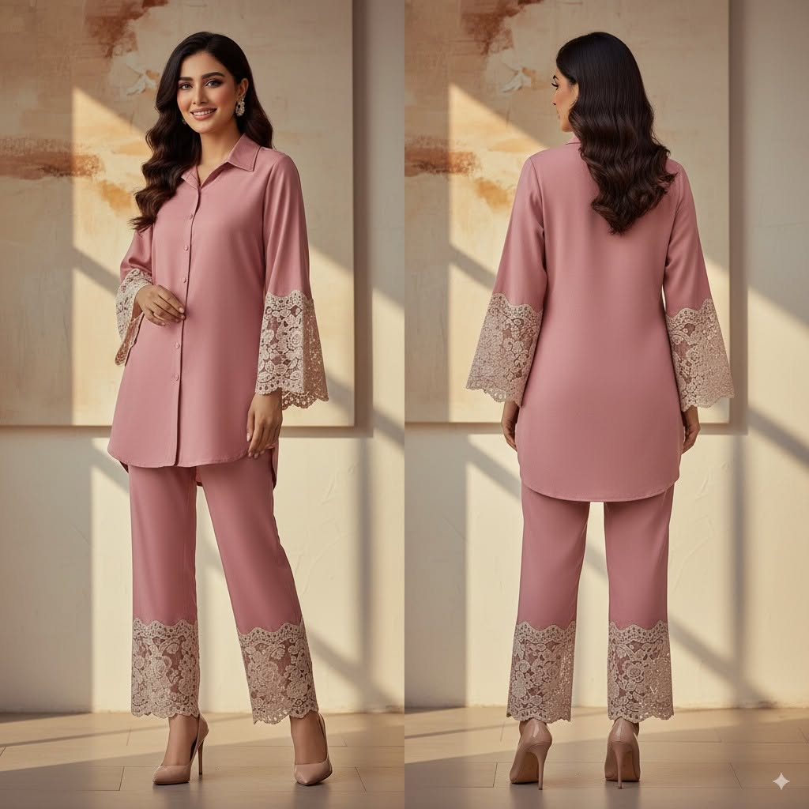
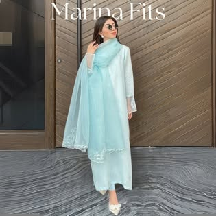
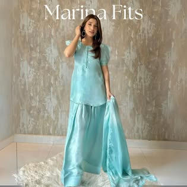
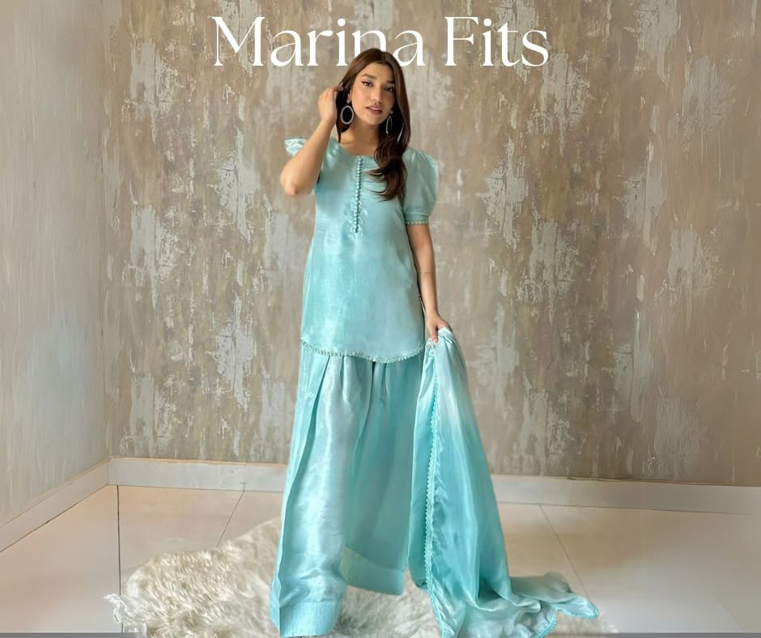
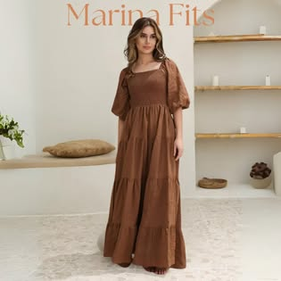
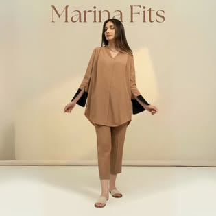
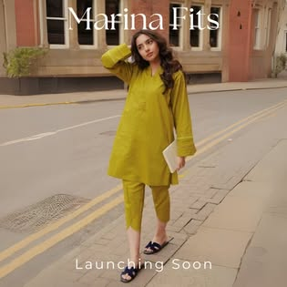

“Grace in Every Thread” — Deep Teal Fringe 2-Piece
Flagship launch campaign post on Marinafits.pk showcasing an AI-designed deep teal minimalist two-piece ensemble with delicate fringe-trimmed cuffs and asymmetrical hemline.
Building my own women’s clothing brand from scratch as a self-sustaining second income source—using Picsart AI & Google Flow to design every dress collection and manage full-funnel social commerce.

Flagship launch campaign post on Marinafits.pk showcasing an AI-designed deep teal minimalist two-piece ensemble with delicate fringe-trimmed cuffs and asymmetrical hemline.

AI-concepted festive 3-piece silhouette combining a jewel-neck keyhole kameez, floral-embroidered sheer organza dupatta, and wide-leg lace-trimmed trousers.
View Post on Marinafits.pk ↗Created the complete visual identity, minimalist line-art emblem, catalog typography, and social media strategy across Facebook (1,880+ followers) and Instagram (@marina_fits_).

Dual-angle AI lookbook showing front and back tailoring of a collared dusty pink tunic and trousers with intricate white lace cuffs.
View Post on Marinafits.pk ↗
Daytime luxury pret design featuring a luminous mint-blue straight shirt paired with a white lace-bordered sheer organza dupatta.
View Post on Marinafits.pk ↗
Softly structured puff-sleeve silk tunic with wide-leg palazzo trousers and a flowing tonal dupatta.
View Post on Marinafits.pk ↗
Breezy everyday pret silhouette accented with vibrant coral-pink and gold geometric neckline embroidery.
View Post on Marinafits.pk ↗
Contemporary fusion wear combining a square-neck smocked bodice, voluminous bishop sleeves, and floor-sweeping tiered skirt.
View Post on Marinafits.pk ↗
Executive-ready minimalist 2-piece featuring a relaxed V-neck camel tunic with bold black split cuffs and cropped tailored trousers.
View Post on Marinafits.pk ↗
Modern urban pret lookbook staging a structured olive-lime tunic and cigarette pants in natural outdoor lighting.
View Post on Marinafits.pk ↗Traditional Pakistani festive color-blocking pairing a teal-emerald embroidered kameez with a contrasting magenta-pink zari dupatta.
View Post on Marinafits.pk ↗Minimalist continuous-line couture silhouette emblem on deep plum—designed for social avatars, hangtags, and lookbook watermarks.
Visit Marinafits.pk ↗Launching an independent women’s clothing brand in Pakistan traditionally demands massive upfront capital for sample stitching, studio photography, model bookings, and location shoots before testing which silhouettes customers actually want to buy.
I founded and launched Marina Fits (Marinafits.pk — “Elegance Woven For You”), using Picsart AI, Google Flow, and generative AI design workflows to create original 2-piece and 3-piece women’s dress collections, visualize realistic fabric drapes (organza, silk, chantilly lace, khaddar, and lawn) on virtual models, and manage the brand’s entire Facebook and Instagram presence.
Successfully launched Marinafits.pk from concept to a 1,880+ follower Facebook community and multi-collection digital storefront—eliminating traditional photoshoot overhead while proving how generative AI can power end-to-end fashion design and e-commerce merchandising.
Core production capabilities and deliverables executed in this workflow: